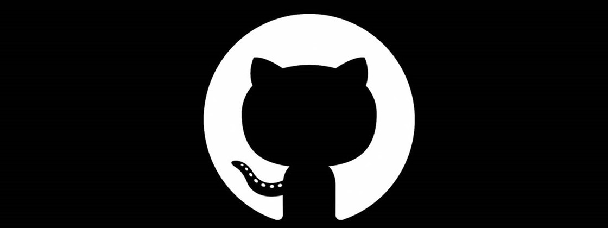

Sobre mim
Olá! Meu nome é João Pedro, tenho 19 anos de idade e sou estudante de Ciência da Computação na UFPR. Além disso, atuo como gerente de projetos na Empresa Júnior de Informática da Universidade Federal do Paraná.
Desde criança fui fascinado por tecnologia, mas foi durante o ano de 2021 que descobri uma das minhas paixões: colocar minhas ideias em prática por meio do desenvolvimento Web e Mobile. Neste periodo, dei os primeiros passos no mundo da programação.


Detalhes...
Além de programador, eu sou apaixonado por música! Toco violão desde os meus 5 anos de idade e acabei aprendendo a tocar guitarra e bateria também!
Já trabalhei para a Opet adaptando livros didáticos para pessoas com deficiência visual.
Roterizei vídeos tutoriais para a plataforma educacional KOLEOS digital.
Minhas habilidades

HTML

CSS

JavaScript

React Native

Bootstrap

C
ONGs e Empresas
ECOMP
Atualmente, atuo como gerente de projetos na Ecomp (Empresa Júnior de Informática da Universidade Federal do Paraná). Lá, pude aperfeiçoar minhas habilidades de gestão de tempo, trabalho em equipe, lidar com a pressão e as responsabilidades de uma empresa. E também, foi durante uma capacitações disponibilizadas que eu tive a oportunidade de aprender React Native e direcionar a minha carreira para o desenvolvimento Mobile.
MJD
O MJD (Movimento Juvenil Dominicano) é um grupo de jovens do qual eu faço parte desde meu ensino fundamental. Nele, nos abordamos temáticas ligadas à formação humana e à sua relação com a sociedade. Entre as ações solidárias que práticamos está o projeto Ombro Amigo, que realiza visita a hospitais, lares de idosos, orfanatos, etc. Foi neste grupo que eu tive meu primeiro contato com uma posição de liderança. Eu fui, durante todo o meu ensino médio, um monitor do grupo, ajudando na ideação e organização dos encontros semanais dos participantes.
Projetos
Para ver meus projetos acesse o meu GitHub! Cada repositório possui uma descrição simples sobre si!
